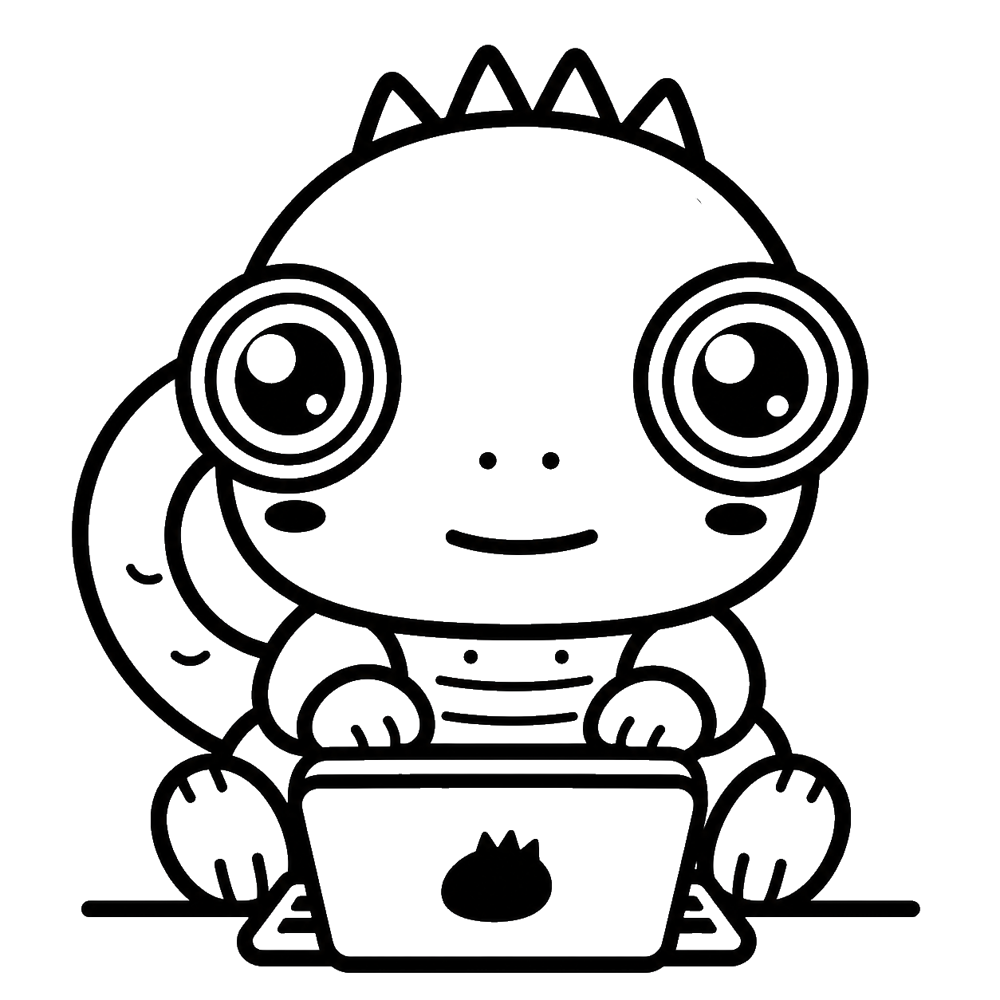

UI / 08INTERFACES
INTERFACES
DE USUARIO
Ocho estilos. Ocho formas de diseñar.
NOMBRE: ___________________________
GRADO: ______________________________
MATERIA: Ciencias de la Computación
Una guía para imaginar cómo puede verse tu trabajo en papel bond. Investiga, observa, explica con tus propias palabras y dibuja cada estilo.
MIRA EL ÁLBUM
Esta web solo muestra el aspecto de un álbum. Sus pistas son intencionalmente breves e incompletas. Si copias la información tal cual, tu trabajo tendrá un puntaje muy bajo. Investiga y redacta tus propias explicaciones. De la IA solo puedes usar imágenes para ilustrar los ocho estilos.
Ocho estilos. Ocho formas de diseñar.
NOMBRE: ___________________________
GRADO: ______________________________
MATERIA: Ciencias de la Computación
Toca un nombre para ver una miniatura. La pista te ayuda a reconocerlo; tu investigación debe completar la explicación.
Imita la apariencia de un objeto real.
¿Qué objetos inspira su apariencia?
La miniatura es una ilustración creada para esta guía, no una definición completa.